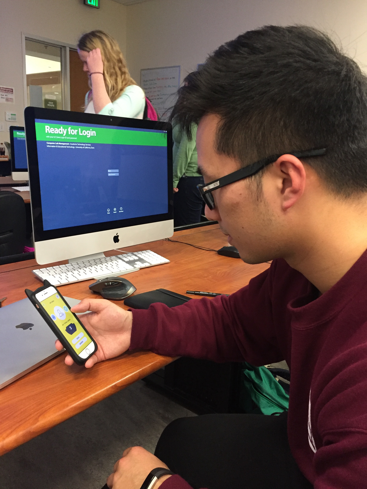

Needfinding
February 23rd

Andy Lin using the ARK app
-
needs a way for clear instructions on the login
-
needs to be able to give instructions and feedback throughout the app to walk the user through all the features
-
needs a way to have varied interactive motions, not just swiping
-
needs to be able to have a layout that matches interactions
-
needs to be able to have simple navigations and not too many redundant pages
-
needs to way to differentiate interactive elements with elements that are not interactive
-
needs a way to connect people together using social features
-
needs a way to post details about each act of kindness
-
needs to be able to have more differentiated categories of acts of kindness
-
needs to be able to alert users to reflect on their day and their actions performed during the day
-
needs to be able see different posts based on different filters